Mnemonic portraits for 19,023 human genes
Back in 2013, Scott Alexander wrote in Extreme mnemonics:
JS-154 is one of five metabolic products of netamine; however, the enzyme that produces it is unknown. It is manufactured in cells in the far rostral region of of the cerebrum, but after binding with a leukocynoid it takes a role in maintaining the blood-brain barrier — in particular guiding the movements of lipid molecules.
I find I can read paragraphs like this five or six times, write them on flashcards, enter them into Anki, and my brain still refuses to understand or remember them after weeks of trying.
On the other hand, my brain easily remembers vastly more complicated structures when they’re loaded with human-accessible meaning. For example, just by casually reading the Game of Thrones series, I know an extremely intricate web of genealogies, alliances, locations, journeys, battlesites, et cetera. Byte for byte, an average Game of Thrones reader/viewer probably has as much Game of Thrones information as a neuroscience Ph.D has molecular biology information, but getting the neuroscience info is still a thousand times harder.
[…]
This makes me wonder if it would be possible to produce a story as enjoyable as Game of Thrones which was actually isomorphic to the most important pathways in molecular biology.
It’s 2026 and we now have LLMs and image generation models. Is the mnemonic worldbuilding project of this scale now remotely feasible?
Here’s my attempt at the first piece of it: the characters.
What molecules should we map to the characters?
There already exist works of fiction that map human cell types to memorable characters.
Osmosis Jones asks: what if each cell was a cartoon character?
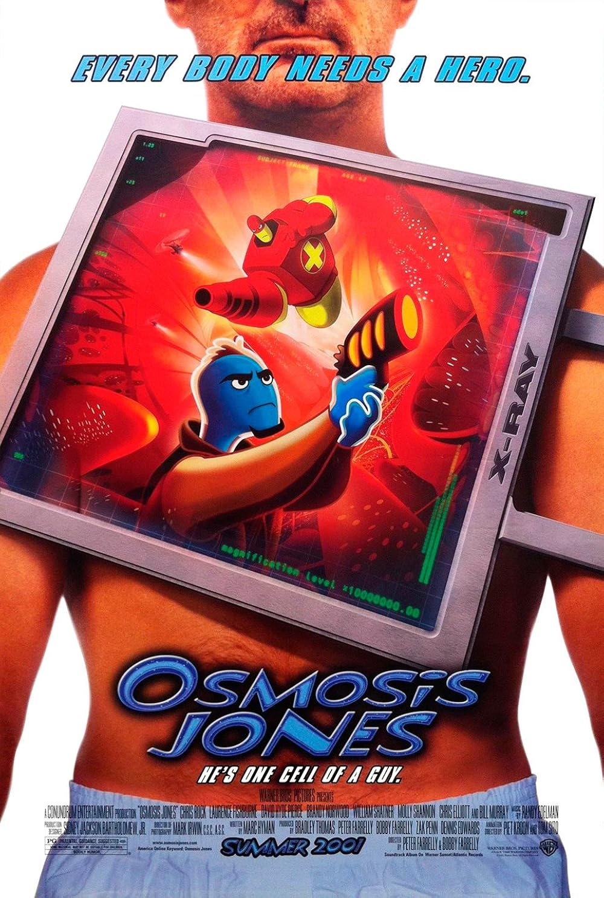
Cells at Work asks: what if each cell was an anime character?
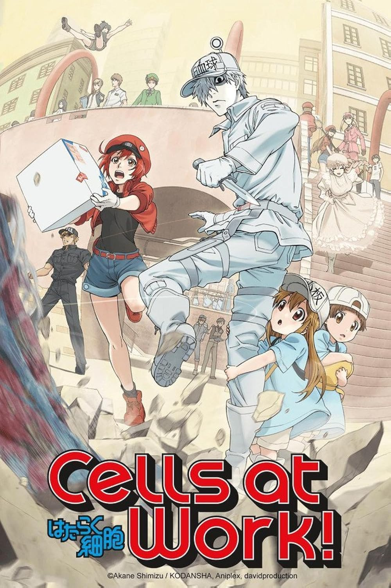
Cells at Work Code Black asks: what if each cell was desperately fighting for survival in the body of an aging impotent smoker?
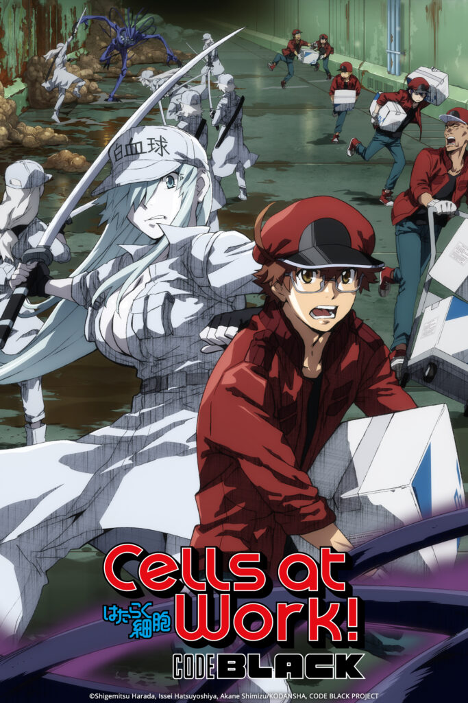
I found these worlds delightful and I do recommend them for students just getting into physiology.
However, the deeper I got into molecular biology, the more I started to find this “1 cell = 1 character” mapping mnemonically futile.
From single-cell sequencing experiments, we know that cell types are not rigid essentialist bins, but are more like attractors in the analog gene expression space. Individual cells routinely change their type-cluster membership during regular development and regeneration. A given cell could have one “type” today and another one tomorrow. You can’t really ask How many cell types are there? — different cell databases categorize human cells into anywhere from 154 to 1715 cell types.
But you can ask How many protein-coding genes are there? totally fine. The answer, in humans, is around 19 thousand. Gene boundaries are a lot more digital and measurement-independent than cell type boundaries. So the natural mnemonic mapping is the one where cells are more like vehicles, cities, or pocket universes — inhabited by gene characters.
19 thousand is a lot of characters to memorize. But it will be roughly the same number of characters today, in 10 years, or in 1,000 years, all keeping the same names1. So it’s worth starting to get familiar with them today.
Isomorphisms
To generate the visual descriptions of the characters, I needed to download gene data, and to come up with memorable isomorphisms.
Getting data for 19k genes was easy — I already had most of it from my previous project, Geneguessr. Bioinformatics datasets have useful per-gene metrics to work with, like protein mass, mutation tolerance, a one-paragraph verbal description, and clan membership.
Getting isomorphisms right was extremely difficult, and LLM suggestions didn’t help much. After a few months of brainstorming and reshuffling, here is what I settled on:
Character sex → protein transmembrane status.
Male = transmembrane protein. Female = soluble protein.
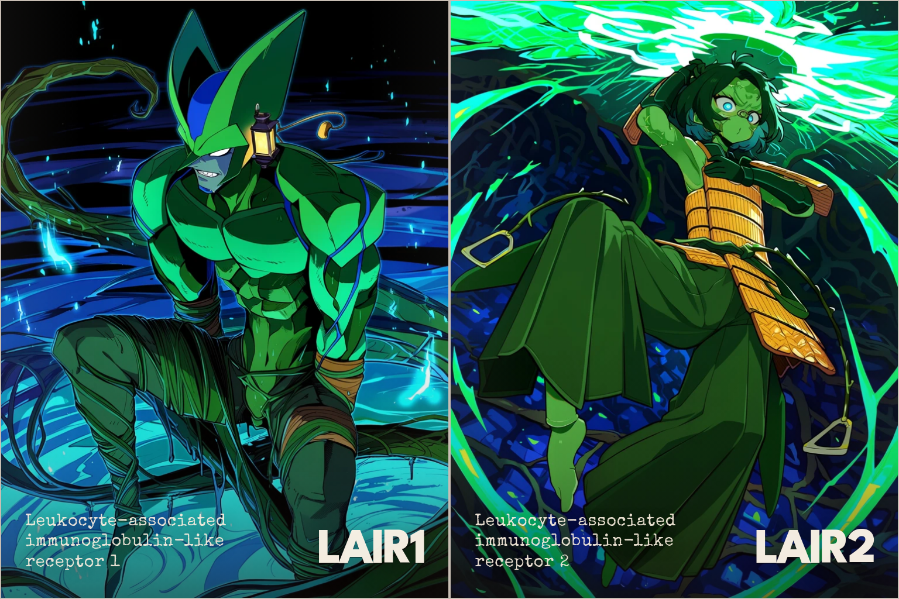
Sex needs to be mapped to something that splits proteins into two roughly equal-sized categorical bins. I found transmembrane status very important to know when studying cell signalling pathways, so I’m happy to keep it prominent, even if the sex ratio is somewhat skewed.
73% of genes became female, 27% male.
Character weight → protein mass.
45 kg = 45 kilodalton (kDa).
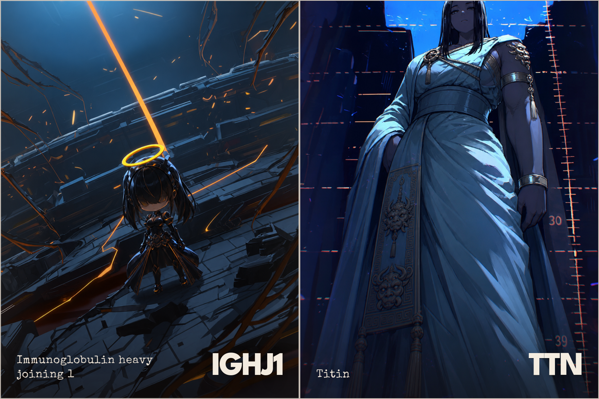
I first experimented with mapping height to amino acid count, but that mapping covered too much dynamic range outside of usual human variation. Amino acid count and protein mass are in a linear relationship, but human weight scales with height squared.
For each gene, I picked the “mass” to match the mass of the top protein isoform when searching that gene in the Uniprot database. This is raw sequence-derived mass, which doesn’t account for post-translational maturation steps. There can also be many alternative protein isoforms per gene, which I associate with multiple isoforms of the same character (think regular Goku vs Super Saiyan Goku).
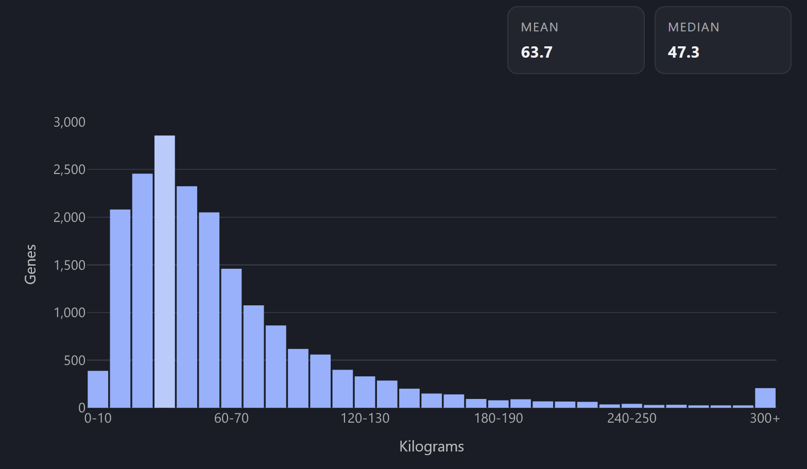
Character age → year of discovery, with 2020 as the zero point.
Gene named in the year 2000 becomes a 20 y.o. character.
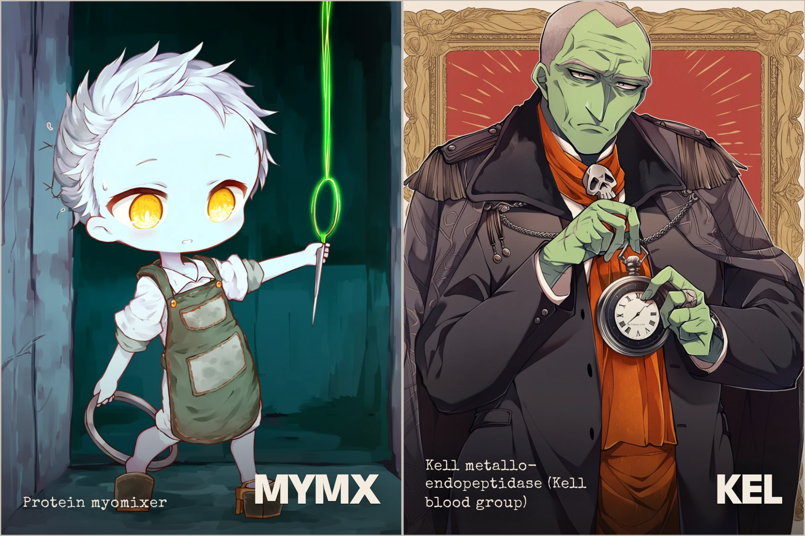
My first instinct was to map character age to gene evolutionary age. However, there’s a lot of uncertainty with both data and measurement models of gene evolution. Definitional nitpicks can easily swing the gene age from being ancient to being very young. Plus that would make most characters into deep elders.
Mapping age to discovery year has bonus mnemonic benefits: the oldest-looking characters become the most “important” in terms of prominence. There are also very few characters who look under-18 but have a huge mass, sparing us from the “huge baby” problem somewhat.
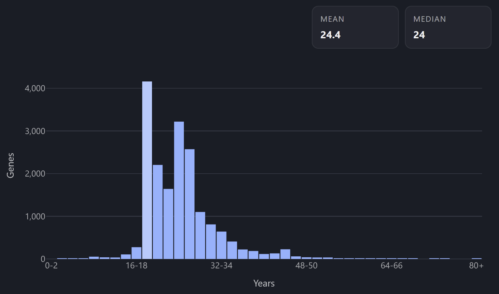
Fashion style → Pfam clan.
The style categorization I really like is Aestheticswiki: a wiki of around 1,000 pages devoted to various strains of historical fashion, subcultures, interior design, and web design. So my goal was to find a protein dataset that sorts most human proteins into 200-700 bins, 1-3 bins per protein, with similar genes getting into the same bin.
Pfam clan database sorts human proteins among 563 structural folds (“clans”) like “Beta-propeller” and “Cystine-knot”. Many genes get 0 Pfam clans, six genes get 7 Pfam clans simultaneously, but overall I’m quite happy with the dimensionality here.
What I’m still not quite happy with is the mapping itself. Turns out, mapping protein folds to fashion styles is some kind of a post-singularity problem. All LLM suggestions I got basically boiled down to “make a 500x800 table and score each square”. I spent so much time trying out more principled approaches, playing around with matching Qwen3 embeddings of aesthetics to ESM embeddings of clans, up to looking at the Optimal Transport method and such. In the end, nothing beats just asking Claude to look through the pairings and reassign the badly matching ones in a loop.
My real stroke of luck was noticing that there’s 9 peptidase Pfam clans and also 9 types of Goths on Aestheticswiki. Given what peptidases do to other proteins, this seemed like a no-brainer association. After assigning peptidases to Goths, I used this well-matching cluster as a template for Claude to find adjacent clans (in text embedding space) and pick a good adjacent aesthetic to map it to. It took a few months to really harmonize the picks, and many nights of just leaving Claude to click on dropdown pickers in the GUI, but overall the mapping turned out halfway decent.
Some examples of aesthetic mappings:
Three clans of glycosyltransferases — GT-A, GT-B, and GT-C — map to three Eastern European styles — Russian 2K17, Slavic Violence Tumblr and Gopnik.
Dark Academia maps to C2H2 zinc finger clan, Theatre Academia maps to RBP11-like, Art Academia maps to SHS2 — protein domains found inside the cell nucleus.
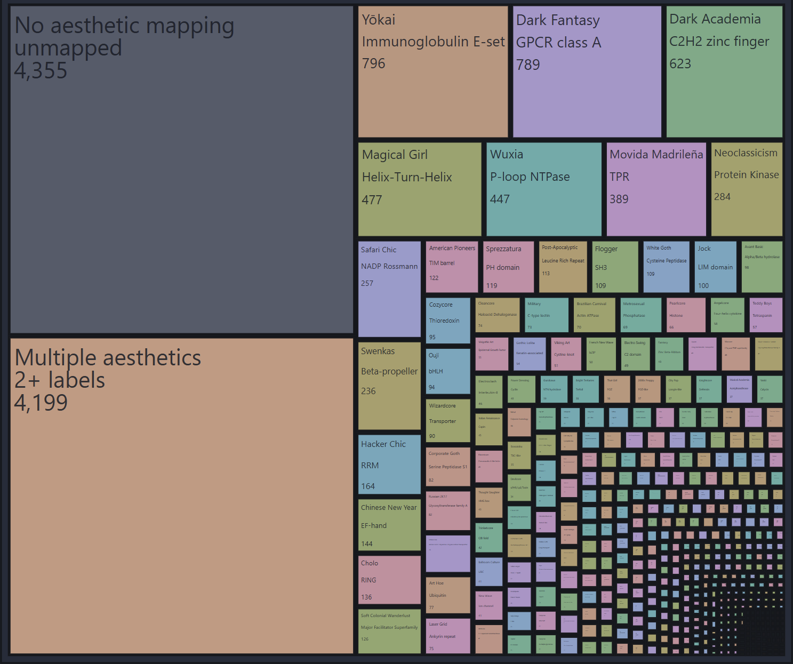
Fantastic feature → Gene symbol stem.
There are like a thousand different OR (olfactory receptor) genes: OR1A1, OR1A2, and so on all the way to OR52Z1. Sure, they all share a Dark Fantasy aesthetic mapped to the GPCR class A clan, but wouldn’t it be nice to reserve memorable features specifically for shared-stem genes like OR? After all, we have to assign cool fantastic features somehow.
Some example features I picked:
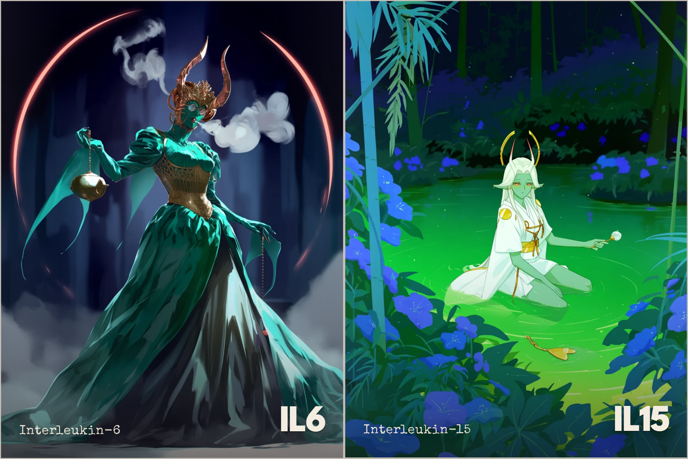
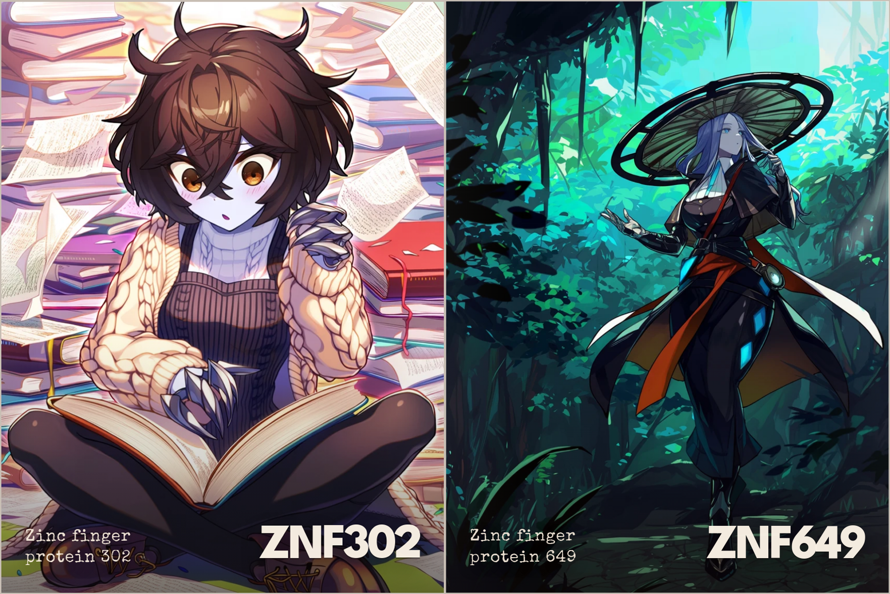
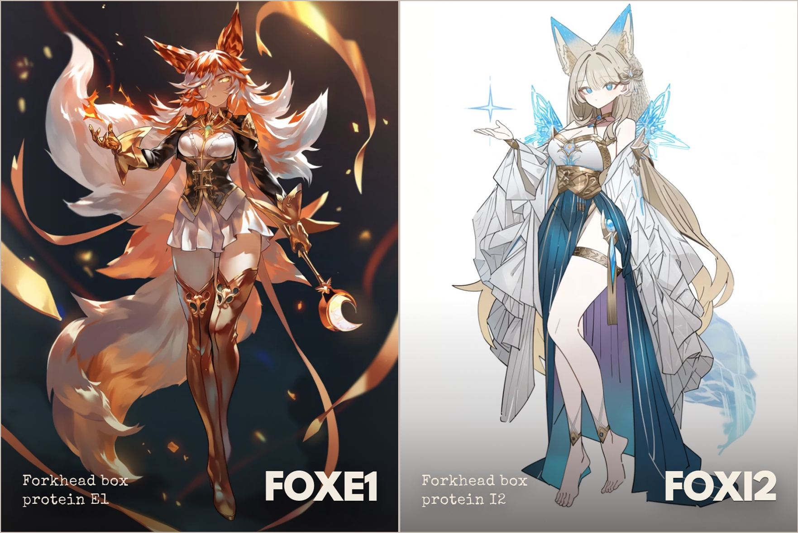
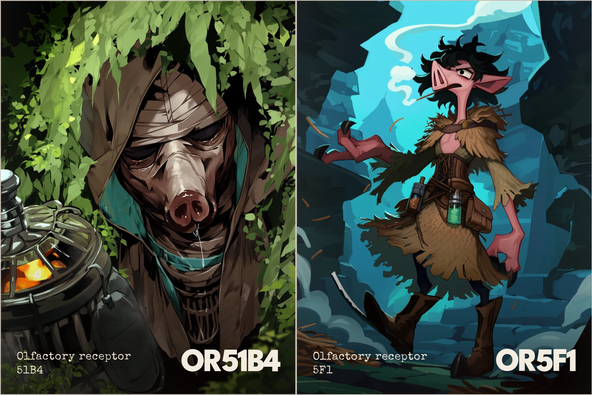
Character color → uhh
This one I struggled with the most.
The dimensionality of color is very weird. The perceptual colorspace is shaped like a bicone. More precisely, it can be somewhat approximated with a bicone.
What colorspace is actually shaped like is something twisted and unholy.
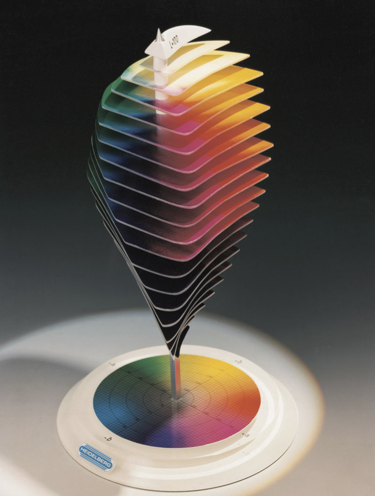
My search for bicone-distributed molecular biology metrics came up empty. So I had to come up with individual gene metrics to map to color coordinates. I picked hue, saturation, and lightness as the most intuitive color components.
I mapped character lightness to gnomAD LOEUF.
This metric basically tells you how well tolerated mutations in this gene are, from 0.0 (intolerable, black) to 2.0 (tolerable, white).
In other words, a low LOEUF score indicates that evolution strongly selects against mutations in this gene: genes highly important for survival will be darker, redundant or miscellaneous genes will be lighter.
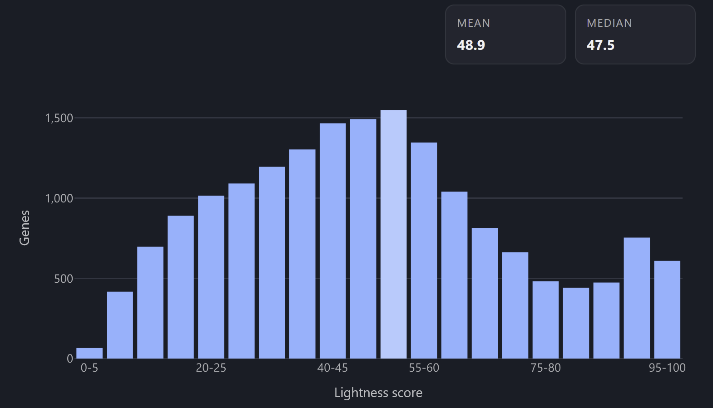
I mapped character color saturation to HPA Tau score.
Tau is a measure of gene expression specificity, ranging from 0 (ubiquitous, gray) to 1 (tissue-specific, saturated).
So a housekeeping gene expressed in the majority of cell types will be gray, and a cell-specific protein will have a vibrant color.
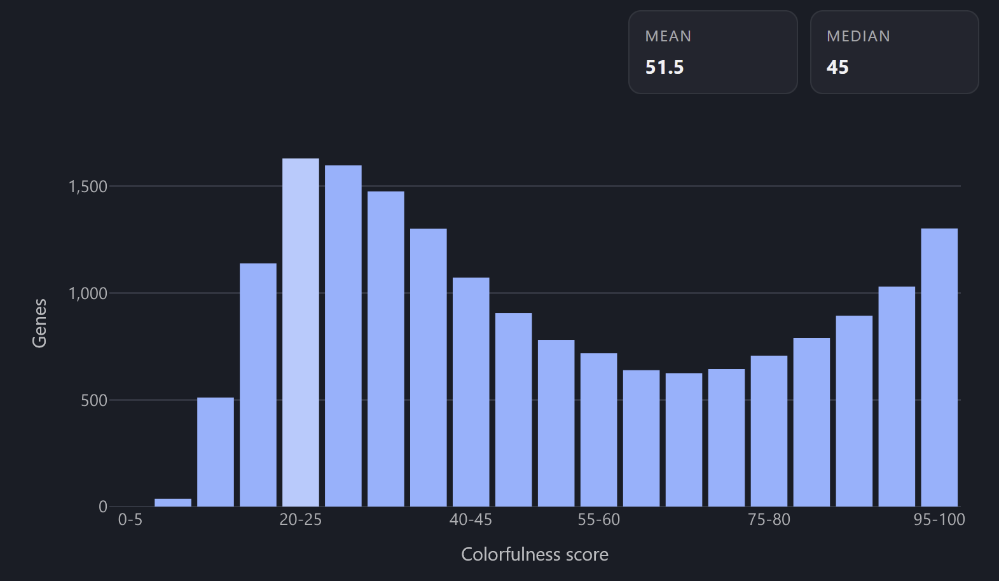
Color hue is different because it’s an angular dimension, not a linear one. So the metric needs to be one that doesn’t really have “low extreme” or “high extreme”, or where the two extremes aren’t that functionally different.
I chose to simply map the hue to the first letter of the gene symbol, mostly for mnemonic reasons (to ease the name recall given that you remember the color).
As a side benefit, genes that share the same name, like GENE1, GENE2, GENE3, keep somewhat similar colors, varying only in saturation and lightness but not hue.
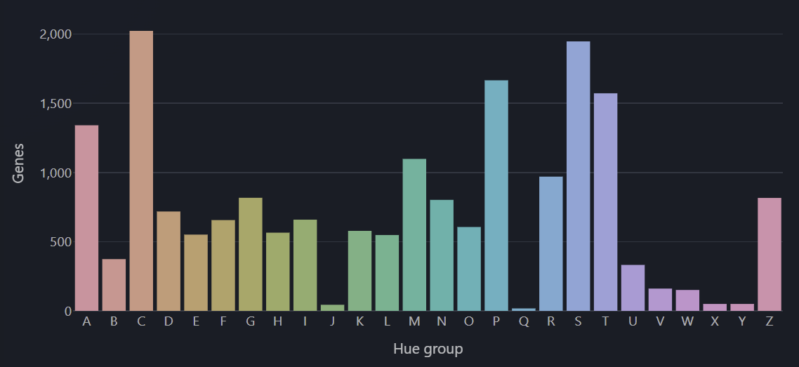
Keep in mind that in a bicone, getting too far up or down along the lightness axis restricts your variation along the saturation axis — so you won’t get colorful blacks or whites, they’ll just look black and white regardless of what hue and saturation you set.
So when you meet a character who’s void black or laundry white in color, you will know their status of importance, but not their tissue specificity or first letter of their name. I think it’s a reasonable trade-off.
To sum up, looking at a gene symbol pill in your browser, you will be able to deduce:
- black pill? important gene.
- white pill? mutation-tolerant gene.
- vibrantly colored pill? tissue-specific gene.
- gray pill? ubiquitous gene, medium importance.
And if you remember the character’s appearance but not their name, recalling their hue gives you a hint to their name.
Generating images
All the above character details, along with the gene function snippet, can be fed to the LLM to make an image prompt (“sample”) for the gene.
Here’s an example of what one sample looks like, for COASY, generated with Claude Opus 4.6:
coasy. the jacket is what you see first: dove grey wool crepe with rounded shoulders and a nipped waist that cinches with the precision of a corsetiere who studied the masters, the buttons covered in matching fabric, the hem ending exactly at the hip where a full circle skirt picks up the silhouette and billows outward to mid-calf in stiff champagne silk taffeta. the skirt uses enough fabric to tent a field hospital. beneath the jacket, a cream silk blouse with mandarin collar buttoned to the throat, the collar’s shape borrowed from qipao construction — high, stiff, framing her jaw like a pedestal. white kid leather gloves reaching past the wrists. cream satin pumps with kitten heels. her hat is a shallow-brimmed cocktail fascinator in dove grey felt, pinned at an angle with a jade butterfly hairpin whose wings are set with tiny seed pearls. she looks like she’s about to take tea with someone she’s already decided to destroy. sixty-two point three kilograms, twenty-six, female. ash brown skin — the muted warmth of fired umber, darker at the knuckles and undersides of her wrists, lighter across the throat where the mandarin collar frames it. built long and curved: shoulders sloped and rounded, breasts set high against the silk blouse, waist small enough to wrap two hands around, hips flaring into the full skirt like a bell, legs long under the taffeta. her face is oval with a delicate jaw, high cheekbones, a small nose, lips full and painted in matte persimmon. her eyes are narrow and dark and very still — always calculating. her hair is blue-black, pulled into a high topknot wrapped with grey silk ribbon, the rest falling in a single thick rope braid down her back to the waist. she carries a jian — a double-edged straight sword, the blade three feet of folded steel polished to a mercury mirror, the hilt wrapped in grey silk with a jade pommel carved into a peony. she draws it from a scabbard concealed beneath the full skirt, the taffeta parting as she reaches through a hidden slit, and the blade comes out singing. every stroke leaves a trail of silk thread in the air behind the blade, fine as spider web, hanging in the space the jian passed through. the silk hardens in seconds — each thread becoming a razor-thin filament that floats at head height and hip height and ankle height, catching light just as it cuts. she fights by filling the battlefield with silk. three minutes into an engagement the air around her is a lattice of cutting threads and she moves through it remembering where every single one hangs while her opponents move through it like paper being fed into a shredder. she is serene throughout, smiling closed-lipped while the garden of silk around her comes into bloom and everything that touches it comes apart.
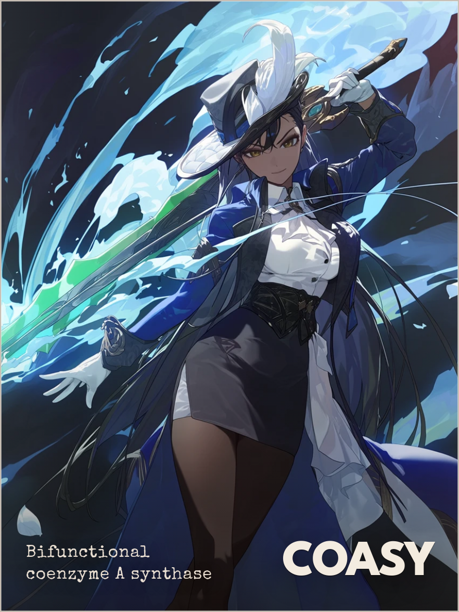
These samples can be optionally processed into comma-separated tags for the image generators that don’t accept huge blocks of text. Still, I think it preserves more than half of the designer’s intent.
The samples have a tendency to mode collapse to a handful of generic props, such as vials and clocks, but overall they come out diverse enough for our use case, while being decently similar between similar genes, and reflecting the gene activity in a way that’s not too literal.
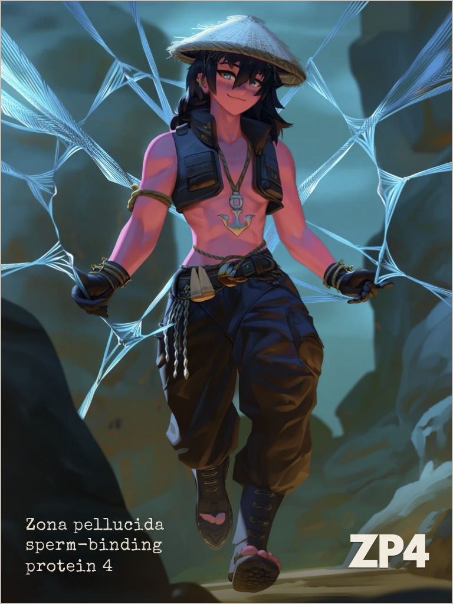
Now that we have 19k text samples, we need to turn them into images. Which image generation service to use? My constraints were as follows:
- Must not bankrupt me when I queue a 19k image job.
- Must have thousands of distinct styles and be easy to switch between them.
- Must have decent detail fidelity in single-character compositions.
Satisfying all three of those at once is not easy.
My personal map of image generation tools in 2026 looks like this:
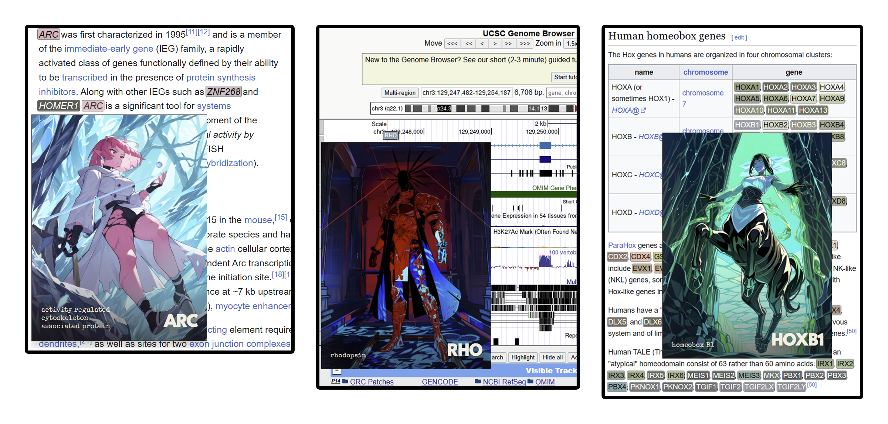
Nano Banana and ChatGPT image2 are at their most impressive when it comes to detail fidelity (number of fingers), complex prompt following, text accuracy, and multi-character images. However, all of their outputs kind of have this “default settings” feel. Once you’ve seen the tone mapping pattern, you can’t unsee it, and all the outputs kind of end up looking tired. You can maybe get around it with one heavily tailored style prompt, but it will still end up blurring together if you reuse it for 19k images.
On the other hand, Midjourney still looks stunning in 2026 and has a very useful “sref code” system for seeding aesthetic variability. However, not only is it a paid service, it doesn’t even offer API access — I would have to reserve my laptop purely for some kind of browser automation. I’ll gladly collaborate with MJ if they offer me some kind of direct access, but for the first pass it will have to wait.
In the “free local imagegen” land, SDXL and Z-image are the two popular local models. I tried them. They’re okay. Their LORA ecosystem does offer decent customization if you’re willing to download each one manually, but I did find their extensibility too clunky for my taste.
What stuck with me was Anima. My goodness, how variable it is, and how much it changes the linework and composition just based on which artist names you add to the prompt. Beautiful. Does it generate an extra finger here and there? Perhaps. Does it mess up character color or prop shape? Yes, it happens. But it’s a fair price for just how much effortless variability you get on a style level with a single pipeline. All of the gene images you see in this post were produced by a local anima-preview on my laptop without any style prompt changes except for the artist names.
Mnemonic harness
Images don’t do any good just sitting in a gallery waiting for me to get into the memorizing mood. To build association via repetition, I had to see the images popping up at the same time as I saw an unfamiliar gene name.
So I made a browser extension.
Iconoplasm is a browser extension that highlights all the gene names on any web page. When you hover your cursor over any human gene, it shows that gene as a character card.
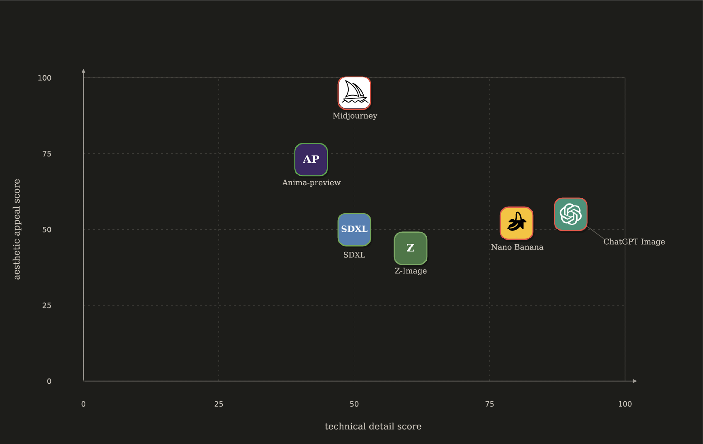
You can one-click install the extension for Firefox or Edge browsers, or install it for other browsers using the manual instructions on the Iconoplasm website. It’s also available on mobile Firefox.
The Iconoplasm website
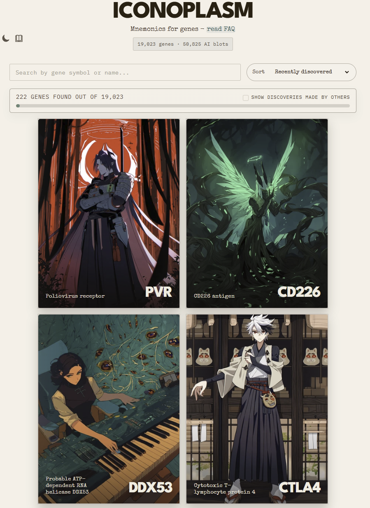
It’s basically a Pokedex system. Whatever genes you’ve hovered over get added into your archive gallery. You get three starter genes you probably already know, and if you want to check out more of them, you can see discoveries of others by clicking the checkbox near the discovery counter.
Clicking on a gene image transfers you to the gene’s page. There you will find the gene card, as well as an interface for image generation, editing, transfer and voting.
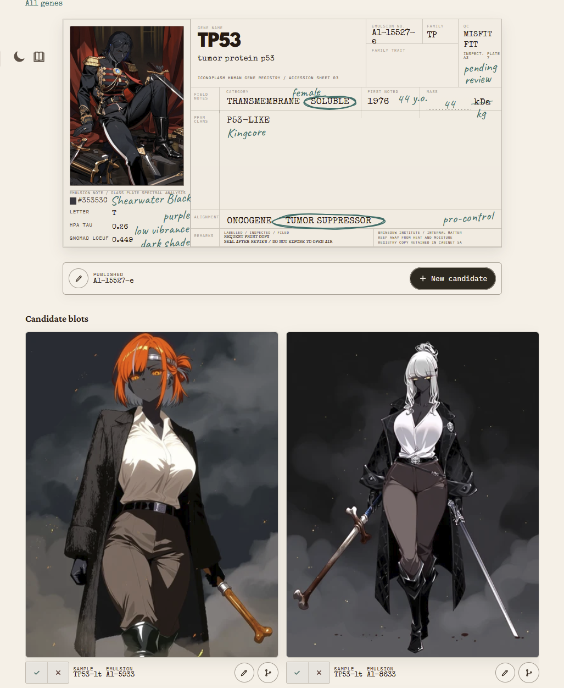
- Gene card shows the isomorphisms that were used to generate an image. You can also click “request print copy” in the footer to download a blot image with the gene name and symbol printed on it (like elsewhere in this post).
- Image generation and editing work on a “bring your own key” basis. Iconoplasm is free, but image generation APIs aren’t. So if you want to edit an existing image, first you will need to go to your Iconoplasm user settings, pick your provider, and input your image generation API key.
- For now, there’s an experimental “free queue” system, where you can send a request for me to generate gene’s image on my laptop using the same local pipeline I used for the images in this post. This is good if you saw one drawing style you really liked — you can write down its emulsion number, and request other genes to be generated using the same emulsion.
- If you spot an image that seems like a good fit for a different gene, you can copy over that image with the click of the transfer button.
- Users can vote on image candidates, and the top candidate is promoted to the place of a canonical blot. This is also a way for me to discover genes where none of the candidates are a good fit. As time goes on, I hope the churn of canonical images slows down and we settle on stable character designs.
There’s currently no on-site functionality for users to change the gene’s written sample. If you have suggestions on how a gene’s sample can be improved, you’re welcome to join the brinedew.bio Discord server and ping me (Brinedew) there.
What’s the legal status of the generated images?
Who knows! It’s 2026 and the status of generative content is murky and varies by jurisdiction. Regardless, my intent is for the images and the character designs to be freely available to anyone to reuse, spread, or profit from.
What about the artists whose names were used in the image gen pipeline?
Long-term, the plan is to switch to a Midjourney-like image gen provider, where style seeds are not tied to artists. Very optimistically, given enough funding, a fully human-drawn gallery can be arranged as a replacement.
Short-term, I have set up a blocklist request form where the artists whose names appear in the Anima database can request having their names blocked and the images removed from the live site.
What next?
Through a gene-character lens, many molecular scenarios supply us with great narrative templates, featuring struggle for power, chaos of incomplete information, rebellion against stifling tradition, and collective self-sacrifice.
Now that the Iconoplasm extension lets us see what genes look like, let’s take a brief look at some mol bio pathways and try to identify the cast of key actors and their factions.
-
Oncogene-induced apoptosis.
- When a cell detects that cell division factors are not sanctioned by context, it activates a self-destruct program to prevent cancer.
- MYC, HRAS, MDM2, and BCL2 want to restart the mitotic cycle without consensus.
- TP53, BAX, and BBC3 would rather collapse the world than let that happen.
-
Enucleation of an erythrocyte.
- As a red blood cell matures, it purposely gets rid of its nucleus to make room for oxygen-carrying hemoglobin.
- EPOR and GATA1 have a plan to jettison everyone out of the cell.
- MYC is attempting to prevent that.
-
Weismann barrier.
- In early development, some cells are set aside as an immortal lineage (future eggs/sperm), while the rest become the mortal body; a genetic switch condemns body cells to age and die.
- BMP4, PRDM1, POU5F1, and NANOG have safeguarded the immortal germline from calamities for untold millions of years.
- EZH2, DNMT3A, and DNMT3B are waking up when the cell has lost the coin toss and found itself on the mortal side of the Weismann barrier. Now their days are numbered: everyone inside will die in 100 years max.
-
Bystander senescence induced by a primary SASP cell.
- A stressed cell sends out alarm signals that cause neighboring healthy cells to permanently stop dividing and enter a damaged, zombie-like state, preventing potential cancer.
- CDK4, CDK6, CCND1, and E2F1 keep the cell in the mitotic cycle.
- TGFB1 and IL1B bring the distress signal from outside: cell division is likely unsafe.
- NFKB1, CDKN2A, CDKN1A, and RB1 lock down the cell cycle.
- TP53 and BBC3 make mitochondria leak free radicals that damage the DNA and make return to the cycle near-impossible.
-
Sperm-egg fusion of different species.
- An egg’s species-specific lock normally prevents cross-species fertilization; if the lock is removed, sperm from a different species can fuse.
- ZP2 and ZP3 guard the egg’s surface and only allow in a single species-specific sperm.
- Without ZP on guard, human IZUMO1 and hamster IZUMO1R recognize each other and initiate the gamete fusion cascade, producing a merged cell.
- The merged cell cleaves once, but further progression is stalled partly because mismatched CENPA, CENPB, and CENPC can’t assist with chromosome segregation, among other reasons.
-
Leukocyte transendothelial migration.
- When infection starts, white blood cells in the bloodstream slow down, stick to the vessel wall near the trouble spot, and crawl through it to reach the damaged tissue.
- SELL and SELPLG keep the leukocyte rapidly moving in a fluid stream.
- ITGAL and ITGB2 on the leukocytes meet ICAM1 that marks endothelial cells during distress.
- RAC1, CDC42, WASP, ACTR2, and ACTR3 control the leukocyte’s movement as it safely penetrates the endothelial layer.
-
Being pushed into a transit amplifying role.
- In tissues like the gut, a regulatory tug-of-war decides whether a stem cell keeps renewing itself or matures into a functional cell that will eventually die; the local environment determines which side wins.
- The CTNNB1, TCF7L2, LGR5 clique is scheming to remain in the cushy stem cell niche for a long time.
- APC, GSK3B, HES1, and CDX2 would rather commit to a short-lived cell lineage, differentiate, and do actual work.
- WNT1-WNT11, RSPO1-RSPO4 outline the shape of the tissue region where the stemness clique is allowed to win.
-
Unsafe cell rejuvenation.
- Attempting to turn back the aging clock by reprogramming cells can unintentionally support pre-existing precancerous mutations, promoting cancer.
- KRAS, PIK3CA, and other oncogenes surreptitiously hoard activating mutations in the process of somatic evolution over lifetime.
- As trust keeps falling in later years, CDKN1A, CDKN2A and other senescence and tumor suppression factors get activated to stall regeneration in suspect regions.
- POU5F1, SOX2, and KLF4 are introduced to tissues full of mutated precancerous cells as an “epigenetic clock reversal” therapy, removing barriers to regeneration (and to cancer).
-
Becoming a transmissible cancer line.
- A cancer cell can evolve the ability to survive outside its original body and spread as a parasitic cell line to other individuals, overcoming multiple immune and structural barriers.
- MYC’s climactic attempt to rebel against the disposable-soma regime and prolong the cell lineage to survive for thousands of years jumping between hosts as a CTVT-like immortal cell line.
- Enemies in the old host: CDKN2A, TP53, RB1, BAK1, BBC3, BAX, CASP8, BCL2L11, and CDH1
- Enemies in the new host: HLA-A, HLA-B, HLA-C, B2M, FAS, CD8A, KLRK1, TAP1, TAP2, and IFNG
- Allies: TERT, BCL2, SRC, ERG, CD274, and TGFB1
-
Decomposition in a body that just died of a heart attack.
- After an organism dies, cells struggle to maintain themselves until their internal recycling systems fail catastrophically, and powerful digestive enzymes leak out, causing self-destruction and decay.
- HIF1A, PRKAA1, and PRKAA2 try to ration oxygen and ATP as the cell economy dwindles.
- ULK1, BECN1, and ATG5 salvage what resources they can internally scavenge.
- Finally, CTSB, CTSD, CTSL, and DNASE2 escape lysosomal containment and initiate autolysis that degrades all cellular life.
If you’re a visual learner, hopefully this type of presentation makes molecular biology more memorable than a traditional mechanism diagram. And if you think you can pull off any of these conflicts as a short story, I’d love to read it.
Limitations
Not all 19k proteins had good data to run with, especially when it comes to Pfam clans and aesthetics.
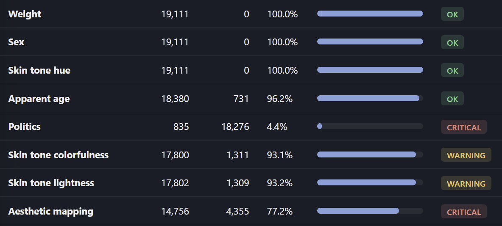
Where the data was lacking, I let the LLM be more creative with interpretation from gene name and gene function.
The gene comparison images were somewhat cherry-picked — it took me about 30 minutes per comparison to find good representatives. I expect the images to become better matched to their isomorphism if the Iconoplasm canonical picks can be progressively refined by the gene fandom.
Footnotes
-
If we don’t count that episode where SEPT1 and MARCH1 got renamed by geneticists because Microsoft Excel formatting kept misreading them as dates. ↩